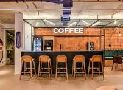

Nossa História
Desde 1934 servindo o melhor café de Minas.

Como tudo começou
Fundado em 1934, pelos meus avós, amantes de café, este estabelecimento simboliza o amor pela produtividade e pela tranquilidade.
Local esse que se pode trabalhar "home-ofice" enquanto toma alguma bebida para te inspirar
Nossos Valores
☕Transparencia
Qualidade
Grãos selecionados das melhores regiões do Brasil.
❤️
Paixão
Cada xícara preparada com cuidado e dedicação.
🤝
Comunidade
Um espaço acolhedor para todos se sentirem em casa.
Onde estamos
Avenida Dom Joaquim Silvério 245
Segunda a sexta — 08:00 às 12:00
Telefone: +55 (31) 9 9540-6165